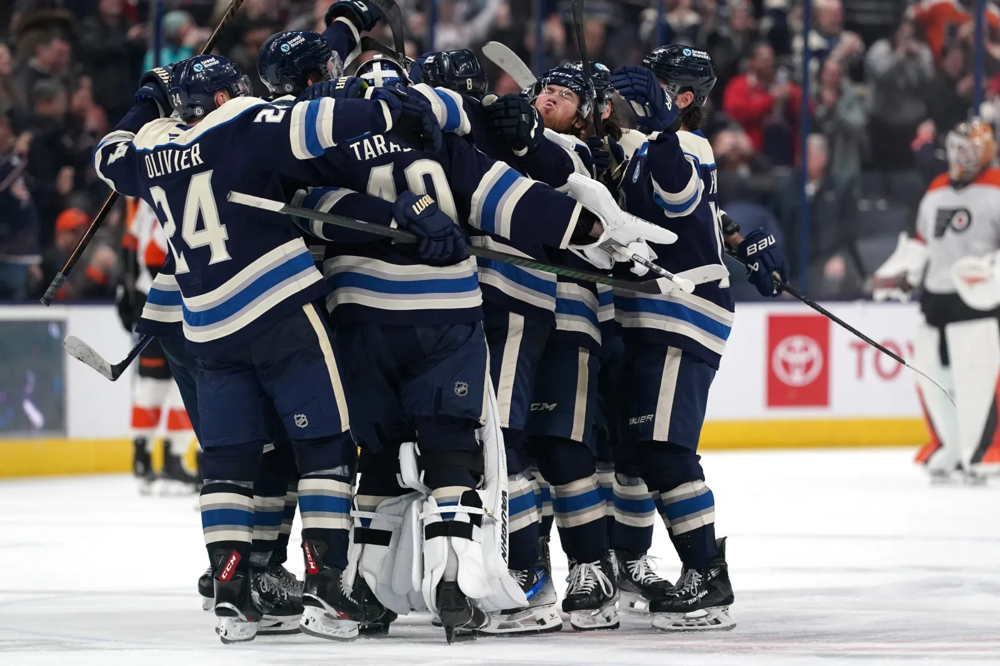
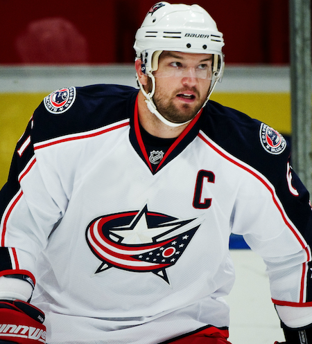
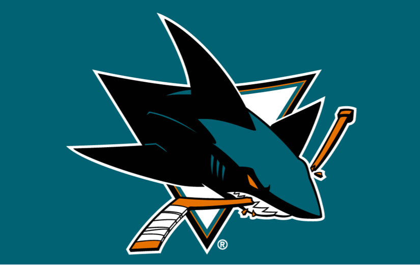
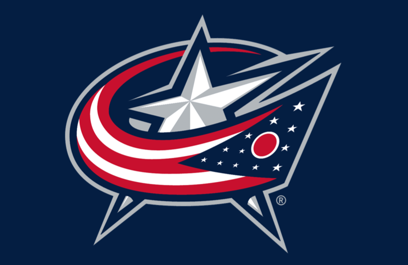
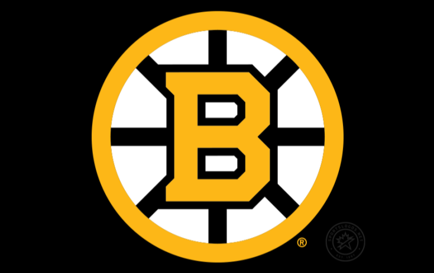
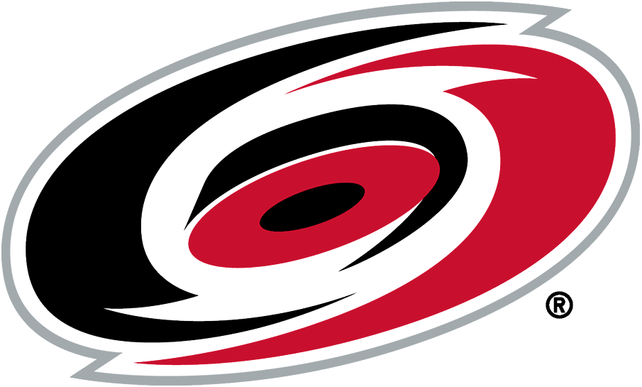
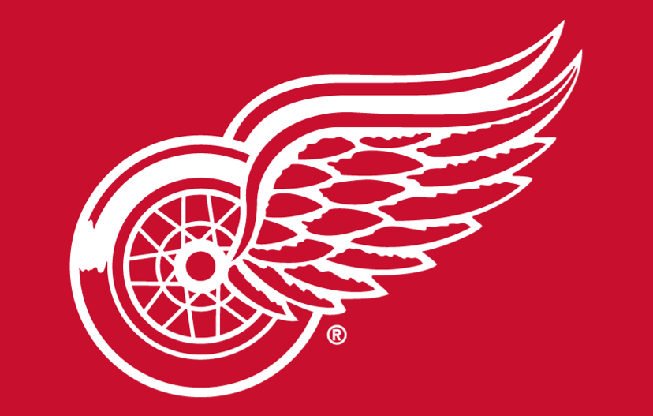
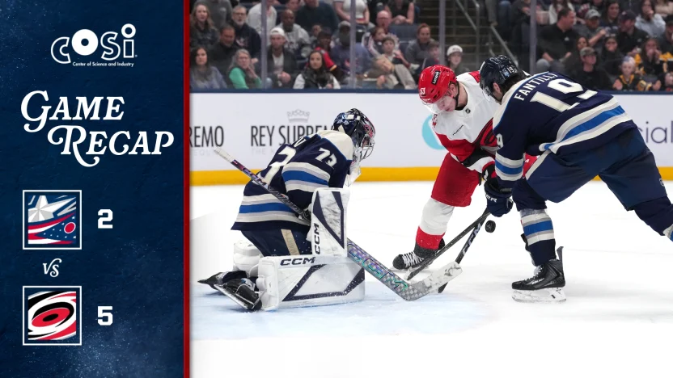
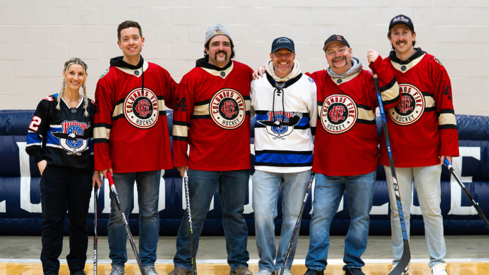
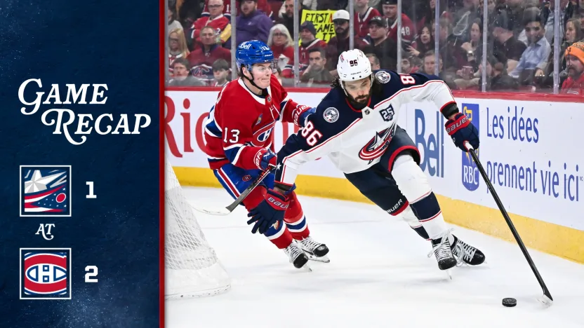

BEM VINDO AO
BLUE JACKETS
Fundado em 2000, o Columbus Blue Jackets trouxe a NHL de volta ao estado de Ohio. O nome do time homenageia os soldados da União na Guerra Civil Americana, cujos uniformes azuis eram fabricados na própria cidade de Columbus.
A franquia é famosa pela atmosfera vibrante na Nationwide Arena, marcada pelo disparo de um canhão real a cada gol marcado em casa. Embora tenha enfrentado dificuldades iniciais como um time de expansão, a equipe consolidou uma base de fãs extremamente leal e apaixonada.
O momento mais icônico da história do time ocorreu nos playoffs de 2019, quando os Blue Jackets protagonizaram uma das maiores zebras do esporte. Eles eliminaram o Tampa Bay Lightning, que havia feito uma temporada recordista, com uma "varrida" histórica de 4 a 0 na primeira rodada.
CONHEÇA OS
JOGADORES

Rick Nash
Ala Esquerda
2002-2012
AGENDA
28

SJS 3
CBJ 229

BOS 431

CAR 52
4
7

DETNOTÍCIAS

Blue Jackets reagiram,mas o Carolina abriu vantagem no final
Columbus continuam com um lugar nos playoffs; Marchenko, Fantilli marcam para os Blue Jackets numa derrota de 5-2

Socorristas ajudam o Blue Jackets a apresentar o hockey às crianças
Líder dos Socorristas Noturnos, membros das equipes de hockey da policia e do corpo de bombeiros de Columbus atuaram como instrutores em uma recente clínica "Sia e Aprenda" do CBJ.

Bolduc desempata no 3º período, Canadiens vencem os Blue Jacktes por uma pequena margem.
Severson marcou para o Columbus, que completou uma sequencia de três jogos fora de casa.